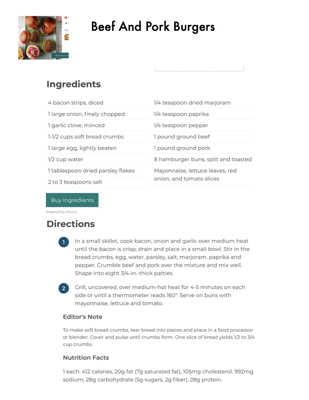

Beef And Pork Burgers

Original cookbook page 190
Hearty burgers made with a combination of ground beef and ground pork, featuring bacon, onion, and seasoned breadcrumbs for extra flavor.
Cook: 8-10 minutes
Ingredients
- 4 bacon strips, diced
- 1 large onion, finely chopped
- 1 garlic clove, minced
- 1-1/2 cups soft bread crumbs
- 1 large egg, lightly beaten
- 1/2 cup water
- 1 tablespoon dried parsley flakes
- 2 to 3 teaspoons salt
- 1/4 teaspoon dried marjoram
- 1/4 teaspoon paprika
- 1/4 teaspoon pepper
- 1 pound ground beef
- 1 pound ground pork
- 8 hamburger buns, split and toasted
- Mayonnaise, lettuce leaves, red onion, and tomato slices
Instructions
- In a small skillet, cook bacon, onion and garlic over medium heat until the bacon is crisp; drain and place in a small bowl. Stir in the bread crumbs, egg, water, parsley, salt, marjoram, paprika and pepper. Crumble beef and pork over the mixture and mix well. Shape into eight 3/4-in.-thick patties.
- Grill, uncovered, over medium-hot heat for 4-5 minutes on each side or until a thermometer reads 160°. Serve on buns with mayonnaise, lettuce and tomato.
📝 Recipe Notes
Editor's Note: To make soft bread crumbs, tear bread into pieces and place in a food processor or blender. Cover and pulse until crumbs form. One slice of bread yields 1/2 to 3/4 cup crumbs. Cook patties to internal temperature of 160°F.
Recipe #190 from collection